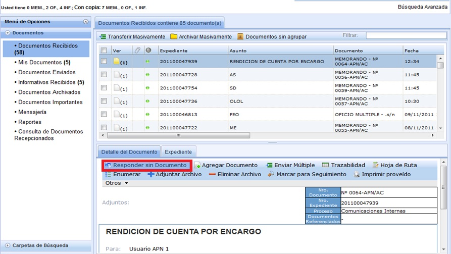
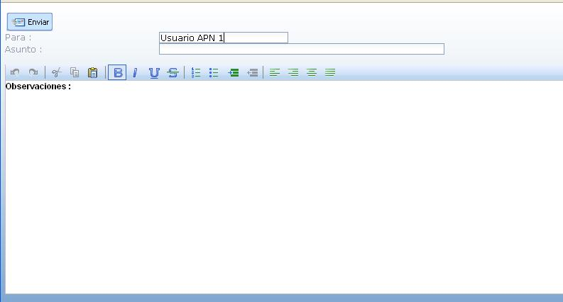

Responder sin Documento:
Cuando se realiza un Envio Múltiple un Documento, al usuario al que se le envía dicho Documento lo encuentra en la Bandeja de Documentos Recibidos. En donde al seleccionar el Documento, en el Detalle observará que tiene la opción de Responder sin Documento.

Al seleccionar en la opción Responder sin Documento, aparecerá la siguiente pantalla, en la cual puedes escribir en la parte baja algún Descripción, así como en el Asunto.

Created with the Personal Edition of HelpNDoc: Full featured Help generator